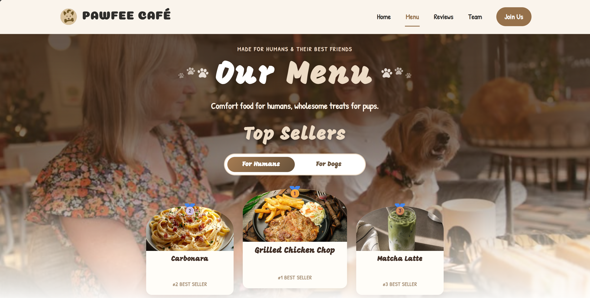
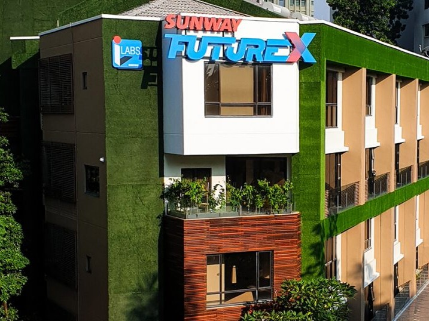
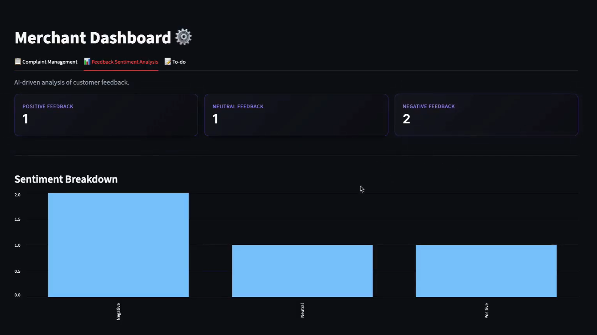

Pawfee Cafe: Menu Page
A dynamic menu page with over 30 dishes, featuring real-time search, category filtering, three sorting options, and a Top Sellers leaderboard with Humans/Dogs toggle.
View page →
Front-End Developer | Menu Page
Hi, I’m Xiao Yan, a Year 1 Semester 3 Computer Science student at Sunway University and a Cadet at 42 Kuala Lumpur (42KL). I am passionate about software and web development, with a strong interest in building user-friendly and visually engaging websites. Through academic projects, hackathons, and hands-on programming experiences, I continue to strengthen my technical skills while exploring new technologies and creating practical digital solutions. For this project, I was primarily responsible for designing and developing the Menu page.
Unified Examination Certificate (UEC)
Sijil Pelajaran Malaysia (SPM)
Bachelor of Science (Honours) in Computer Science
Piscine June 2026
Core Programme


A dynamic menu page with over 30 dishes, featuring real-time search, category filtering, three sorting options, and a Top Sellers leaderboard with Humans/Dogs toggle.
View page →
SentimentFlowAI is an AI-powered customer service platform built for UMHackathon. It uses Gemini AI to analyze customer feedback, detect sentiment, and automatically organize support cases to improve customer service efficiency.
View page →